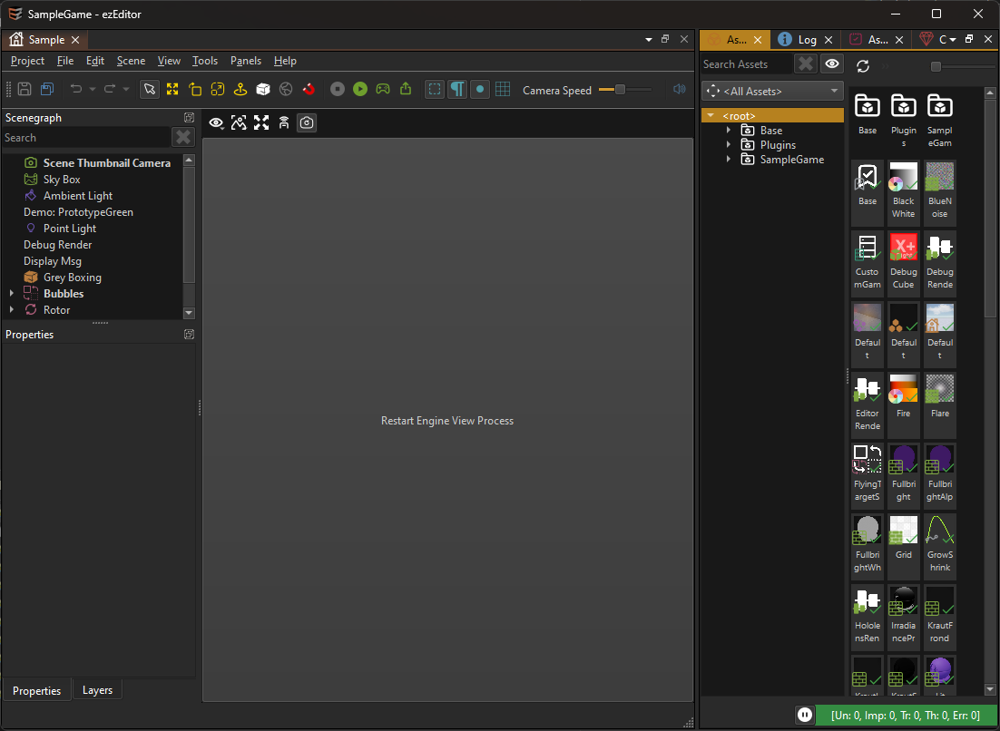

Hot Reloading C++ Game Plugins in the Editor
When writing game code in C++, the most annoying aspect are the iteration times. Due to how C++ works, it is nearly impossible to swap out code and replace it with a newer version. Some engines try to do this, but there are always limitations, and the effort to get this working and keep it from breaking is quite big.
ezEngine is no different here, reloading code at runtime is not possible. However, the editor is split into two processes: The actual editor process which displays the UI, and manages the scene state, and the engine process which does the scene rendering and executes the actual game code. This separation makes the editor more resilient to crashes. If the engine process crashes, the editor will typically just display this:

When you click the button, the editor launches a new engine process, synchronizes the latest scene state over and continues as if nothing happened.
That of course means, that when the new engine process launches, it also loads the latest state of all plugins. So if any of the plugins was modified, we would now see these modifications. So by simply nuking and restarting the entire engine process, we can get some form of C++ code hot reloading.
Unfortunately, you can't compile a plugin while a process is using it, because the process prevents other applications from writing the DLL. We can solve this problem, by making a copy of our game plugin DLL, and loading that instead. That means that the original DLL is not actually used, and our IDE can modify it further.
This trick works quite well if we only do it for plugins that are loaded fully dynamic, meaning that no other plugin tries to link against it. If that were the case, both the original plugin, as well as the copied plugin would get loaded, which is not good. Therefore only select game plugins may use this copy mechanic, which is why you need to set this up manually.
How to Enable Plugin Hot Reloading
In the plugin selection dialog, select your custom plugin and check Enable Reload.
Note:
If you used the C++ Project Generation feature to create your project, the reference to your C++ plugin is automatically set up this way.
Now you can modify the code of your plugin and compile it, while the editor is open. Of course, you can't do that while being attached with a debugger.
When a plugin is marked as Enable Reload, and it gets modified, the editor already automatically restarts the engine process, once no scene is being simulated.
Terminate and Restart the Engine
You can always manually restart the engine process through Tools > Reload Engine or the hotkey Ctrl+Shift+F4.
Restrictions
The Enable Reload option should only be used for select game plugins. Enabling this feature can have unintended side-effects.
- If any code links against a plugin, that plugin cannot be loaded as a copy. Therefore, if you want to put shared code into a separate library that other users of your plugins link against, you can't load that shared library as a copy.
- You can't compile code while debugging a process. To compile your code, you first have to detach your debugger. In Visual Studio that can be done via
Debug > Detach All. - Consequently, if you want to continue debugging after you restarted the engine process, you need to manually re-attach your debugger to EditorEngineProcess.exe. In Visual Studio this is done via
Debug > Attach to Process...or even betterDebug > Reattach to Process(SHIFT+ALT+P) when you want to repeat the same thing a second time.